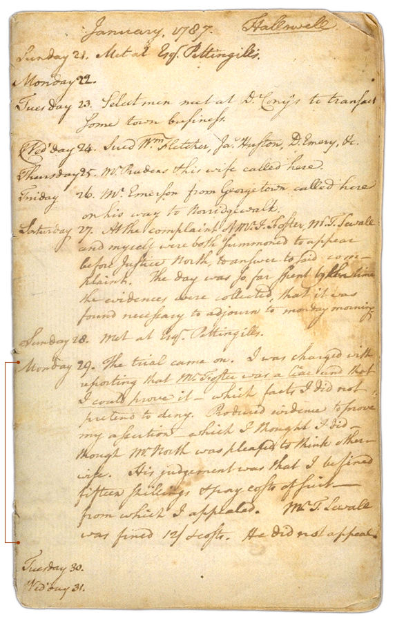

The Official Story
Chapter 3
Foster sues the Sewalls
The Rev. Mr. Isaac Foster did not turn the other cheek; instead he turned around and sued Henry Sewall and his cousin Thomas for slander. When called before Judge North, Henry Sewall did not deny calling Foster a liar, but attempted to offer evidence for his claim. See what Sewall wrote in his diary entry on the day of the trial: "Produced evidence to prove my assertion which I thought I did -- though Mr. North was pleased to think otherwise."
| Did Martha attend the trial in the slander lawsuit? |
Are there surviving court records of the case? Not that we know of. The hearing that took place at Judge North's house in January of 1787 might have been recorded -- but most records kept by justices of the peace like Judge North have disappeared.
We do know, however, (from Henry Sewall's diary, January 29, 1787) that Judge North found Sewall guilty of slander and fined him 15 shillings plus court costs.

| previous |
Henry Sewall mounts an attack against Rev. Mr. Foster | |
| next |
But the matter did not end here... |
| Henry Sewall's Diary Sewall, Henry 1776 - 1842 |
View Text View Frames version |
|
|
||
|
 |
||